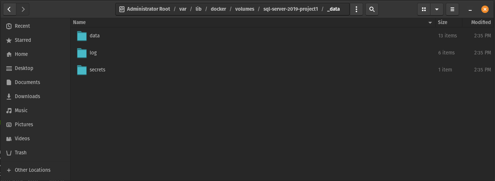

2023 02 17 docker
I've been using Docker for about 4+ years now, and it really simplifies software development and deployment. Docker works well on Windows 10 under WSL 2.0. However, once you've run Docker natively on a Linux machine, you'll notice a huge difference in performance, memory and space usage, and there's really no comparison between running Docker natively and 'emulating' Docker in a WSL Linux kernel via Hyper V.
As with all my guides, I'll be using Pop!_OS as my Linux distro of choice.
Introduction¶
Required skill level: Intermediate
I use Docker every day, and these are the things I use Docker for:
- Create Docker images to deploy software that runs on virtual machines
- Running relational databases in containers
- Building .Net and Angular software applications using Docker BuildKit
- Running VPN software in Docker to simplify the installation and use of VPN software
In this guide we'll be learning about how to install Docker on Pop!_OS and how to run multiple relational database containers using Docker.
Installing Docker¶
Here I'll give you the scripts I use to install Docker, but I'll also go through what the scripts actually install. It can be dangerous to just copy and paste scripts, so I'll try to explain what the scripts actually do as we go along.
There are a number of dependencies for adding the Docker apt sources:
- ca-certificates - contains a number of common certificates used for SSL/TLS encryption.
- curl - a command line tool for interacting with web servers, often used to download files.
- gnupg - GNU Privacy Guard is a tool for secure communication and storage. It's used to encrypt and sign messages.
- lsb-release - Provides information about the version and distribution of the Linux distribution you are currently using.
# Get dependencies to install docker
sudo apt-get update
sudo apt-get -y install ca-certificates curl gnupg lsb-releaseNow we should have all the dependencies that we need to add the Docker apt sources to our apt sources, which allows us to get the latest Docker packages from Docker itself, rather than getting the images from the Pop!_OS or Ubuntu maintainers.
# Add docker ppa reference
sudo mkdir -p /etc/apt/keyrings
curl -fsSL https://download.docker.com/linux/ubuntu/gpg | sudo gpg --dearmor -o /etc/apt/keyrings/docker.gpg
sudo echo "deb [arch=$(dpkg --print-architecture) signed-by=/etc/apt/keyrings/docker.gpg] https://download.docker.com/linux/ubuntu $(lsb_release -cs) stable" \
| sudo tee /etc/apt/sources.list.d/docker.list > /dev/nullNext, we'll actually install Docker and its associated packages:
- docker-ce - Package for the Docker Community Edition.
- docker-ce-cli - Package for the Docker Command Line Interface, a tool for managing Docker containers and images from the command line.
- docker-compose - A tool for defining and running multi-container Docker applications.
# Install docker
sudo apt-get update
sudo apt-get -y install docker-ce docker-ce-cli containerd.io docker-compose-plugin docker-composeOnce Docker is installed, I don't like using sudo for every Docker command on my local machine. If I add my current user to the docker group, I won't need to use sudo when using Docker.
This step is optional. If you don't perform this step, you will need to add the sudo command before each Docker command in the future. Note that you will need to reboot your machine after running the script below for the change to take effect.
# Make a docker group and add the current user to the group
sudo groupadd docker
sudo usermod -aG docker ${USER}Now, to test that Docker is successfully installed, run the following, and you should get the expected output if Docker is installed correctly.
docker ps
# Expected output
# CONTAINER ID IMAGE COMMAND CREATED STATUS PORTS NAMESUsing Docker to install relational databases¶
I typically use Docker to run relational databases because I use multiple database software. By using Docker, I can have a different 'server' for each project I'm working on and only have that server available when and if I need it, rather than having it running in the background all the time.
Here is the script I use to spin up a MS SQL Server, PostgreSQL and MySQL server databases. For each server we use its default port and password "SuperWeakPassword123!"
# Spin up MS SQL Server 2019 Developer edition
docker run -d \
-e "ACCEPT_EULA=Y" \
-e "MSSQL_SA_PASSWORD=SuperWeakPassword123!" \
-p 1433:1433 \
--name sql-server-2019-playground \
mcr.microsoft.com/mssql/server:2019-CU18-ubuntu-20.04
# Spin up MySQL Server 8
docker run -d \
-e "MYSQL_ROOT_PASSWORD=SuperWeakPassword123!" \
-p3306:3306 \
--name mysql-8-playground \
mysql:8.0.27
# Spin up PosgreSQL 14
docker run -d \
--name posgresql-14-playground \
-e "POSTGRES_PASSWORD=SuperWeakPassword123!" \
-p 5432:5432 \
postgres:14.1-alpineStarting and stopping these containers is as simple as the commands below.
# Remember to replace "container-name" with the actual container name
docker stop container-name
docker start container-nameSince these are just playground containers, after I've finished testing what I want to test in SQL, I can just nuke them with the following commands
docker rm sql-server-2019-playground --force
docker rm posgresql-14-playground --force
docker rm mysql-8-playground --forceBut what if you actually want to store the database files outside the container? You can do this by attaching a volume to the folder where the database files inside the container. This makes it much easier to database from, say, a production server back to your local development container.
Here we have the same script we used to spin up the SQL Server container, but note the extra part --volume sql-server-2019-project1:/var/opt/mssql. This will create a volume called sql-server-2019-project1 in the /var/lib/docker/volumes/ folder on your machine. You can easily dump a backup file or even drop a mdf and ldf file into the volume, and it will be picked up by SQL Server.
# Spin up MS SQL Server 2019 Developer edition
docker run -d \
-e "ACCEPT_EULA=Y" \
-e "MSSQL_SA_PASSWORD=SuperWeakPassword123!" \
-p 1433:1433 \
--name sql-server-2019-project1 \
--volume sql-server-2019-project1:/var/opt/mssql \
mcr.microsoft.com/mssql/server:2019-CU18-ubuntu-20.04If we navigate to this volume in the GUI, we can see that there are the following folders in the volume:
- data - contains the mdf and ldf files for all databases
- log - contains the error log and trace files for SQL Server
- secrets - holds certificates and other secrets

Typically, I create a new folder called backups, put the .bak files in that folder and then restore the backups using Azure Data Studio. The allows the volume's files to be easily accessible between my local machine and from within the container.
Conclusion¶
Installing Docker is very useful for a local development environment. It is particularly useful when working with relational databases and makes it really easy to test software against different versions of the same database engine. With each project running in a different container, switching between projects becomes much easier as each container only has the databases associated with that project.